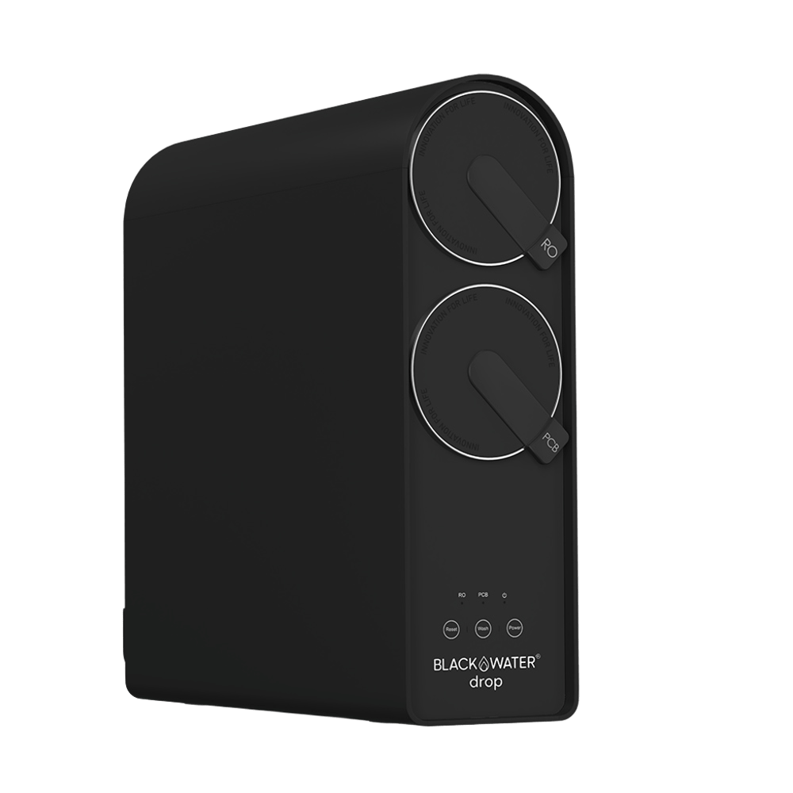

Direct Flow RO
BLACKWATER Drop
Kompaktes 5-stufiges Untertisch-Umkehrosmosesystem mit 800-GPD-Membran, Remineralisierung und separatem Edelstahlhahn.
1.490 €
Technische Daten
| Produkttyp | Untertisch-Direct-Flow-Umkehrosmose |
| Filterstufen | 5 |
| Vorfilter | PCB 2-in-1: Aktivkohleblock-Sedimentfilter + Glyphosat-Einheit |
| RO-Membran | Hochleistungs-RO-Kompakteinheit, 800 GPD |
| Nachfilter | PCB 2-in-1: Geschmacksoptimierung und pH-Stabilisierung |
| Reinwasserleistung | bis 2,2 L/min |
| Abwasserverhältnis | 1:0,5 |
| Ergebnis laut Hersteller | 1 L Reinwasser aus 2,5 L Leitungswasser |
| Eingangsdruck | 0,5–4 bar |
| Abmessungen | 42 × 13,2 × 46 cm |
| Nettogewicht | 8 kg |
| Schutzart | IPX1 |
| Spannung | 100–249 V / 50–60 Hz; Netzteil 24 V / 4 A |
| Stromaufnahme | 1,4 W Standby; 84 W Betrieb |
| PCB-Filter | 4.000 L oder 6–12 Monate |
| RO-Membran-Intervall | 7.000 L oder 12–24 Monate |
| Lieferumfang | Gerät, RO- und PCB-Kartusche, Edelstahlhahn, Schläuche und Installationskit |
| Garantie | 2 Jahre |
Datenhinweis
Technische Angaben, Preis und Bildmaterial stammen von der verlinkten offiziellen Produktseite. Herstellerangaben wurden nicht unabhängig verifiziert.
Technologie und Wasserwissen
Diese Ratgeber erklären die eingesetzten Verfahren, Messwerte und Grenzen unabhängig von einzelnen Herstellerangaben.
- Umkehrosmose: Funktion und Filterleistung
- TDS im Wasser richtig einordnen
- Aktivkohlefilter richtig einsetzen
Wasserwissen entdecken · Alle Filtertechnologien · Produkte vergleichen